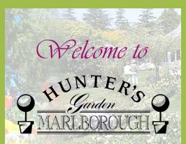
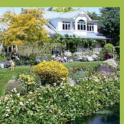

|  |  | ||||||||||||||||||||||||
|
|
|||||||||||||||||||||||||
Welcome The province of Marlborough is the gateway to the South Island of New Zealand made world famous by its spectacular scenery and Sauvignon Blanc wines. Hunter’s Garden Marlborough is New Zealand’s premier garden event and is sponsored by Hunter’s Wines Ltd. This six day festival showcases the finest gardens in the district. Guided tours take you through private gardens along the labyrinth of waterways that make up the Sounds. Through secluded town and country gardens from ridge top to valley. World renowned and local experts on gardening are invited to speak at seminars on everything form growing your own vegetables to planning your garden. Socialise at our Garden Party in glorious surroundings and indulge your passion at our annual art auction. Shop till you drop at the Garden Fete at eat at some of our fine cafés and restaurants. Above all come and enjoy the warmth and generosity of the people who live in this glorious corner of the world. Andrew Ritchie (Chairman Hunters Garden Marlborough) Welcome once again to the programme for Hunter’s Garden Marlborough. You’ll find plenty of ideas to whet your appetite in the following pages as we count down to one of the most exciting weekends of the year for Marlborough. While everyone is more than busy starting their preparations to make sure their gardens are at their best for the weekend’s tours, I can’t imagine what it must be like to prepare a garden for the world’s most renowned garden event or even for a heritage garden attracting hundreds of thousands of tourists a year. We’re featuring two such experts during this year’s festival. Peter Stafford, the man charged by the British government with restoring and recreating the Lost Gardens of Heligan, now a major tourist attraction and Trish and Doug Waugh, part of the landscaping team responsible for New Zealand’s finest hour at the Chelsea Flower Show, the Ora Garden. Their stories of preparing firstly, a garden for show every day of the year and for the Waugh’s, a garden representing the hopes of an entire country, will no doubt make for fascinating listening. While their gardens are on opposite sides of the world they share a common spirit in their planting. As do the tales of one of our other star guests, Professor T.W. Walker of Lincoln University, known to his many fans simply as The Prof from Maggie’s Garden Show on TV One. His adventures in soil care and science will be a talk not to miss. Of course out of the best soil comes the finest produce, the type of vegetables this year’s celebrity chef Peter Chaplin has prepared for the likes of Madonna, Iggy Pop, Chrissie Hynde, The Pretenders, The Thompson Twins and other musical greats. His travels as a rock'n'roll chef and his creativity in the kitchen at his award winning Musical Knives restaurant in Auckland will fuel his demonstration of fresh funky food from the garden that just happens to be good for you. I am always impressed with the lengths the organisers go to, to create a varied programme and this year is no exception. From stone-walling instructions to how to make flax flowers, Hunter’s Garden Marlborough never ceases to surprise in terms of practical and beautiful reasons to visit the region. Not to mention the other attractions that take place as the sun goes down and the cap is unscrewed or the cork popped on one of Marlborough’s other icons, a crisp bottle of Sauvignon Blanc. ‘Til November, Ciao
| A few words from our Patron I am thrilled to have been asked to be Patron of Hunter’s Garden Marlborough having with the original organizers watched with pride the event grow to be one of the major garden festivals in New Zealand. The festival was created by a group of enthusiasts who wanted to promote the beautiful gardens of Marlborough and saw the event as one that could involve the community as a whole. The current committee through their hard work have created an exciting and varied programme for 2005 with new and old favourite garden tours to tempt both regular and first time participants. The wide choice of workshop presenters has something of interest for all visitors and makes a compelling reason to visit our superb Marlborough province. I would like to congratulate the organisers, their helpers and the sponsors and wish everyone attending Hunter’s Garden Marlborough a fun filled and sun filled week in November
Carolyn Ferraby (Patron) |
||||||||||||||||||||||||
| © 2005 Hunter’s Garden Marlborough. Blenheim. New Zealand. Phone: 0800 627 527 Fax: 064 3 578 0667 Email: info@garden-marlborough.co.nz | |||||||||||||||||||||||||
|
|||||||||||||||||||||||||